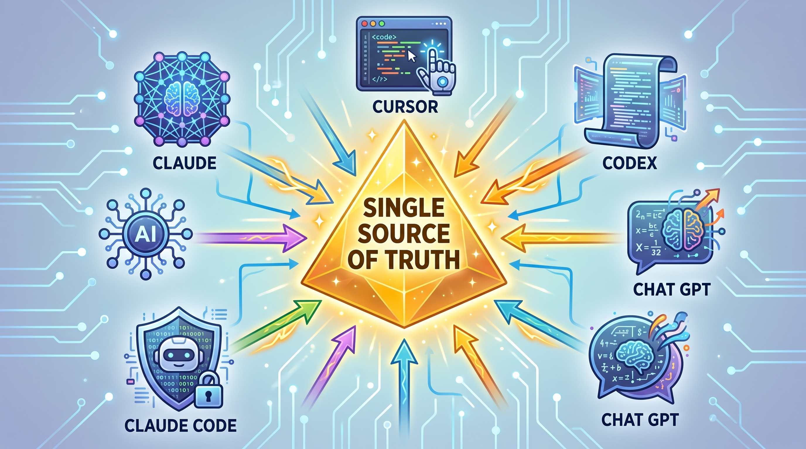
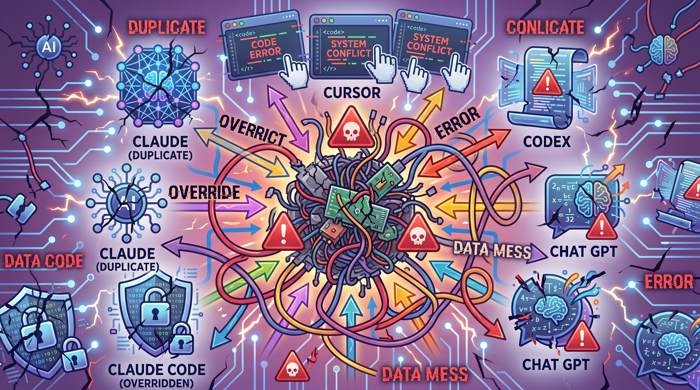

A methodology for AI tooling hygiene
A general approach for organizing AI agent skills and MCP servers so they have a single source of truth on disk, stay in sync across every tool that reads them, and never get silently duplicated, broken, or overwritten when something moves.

One physical root, symlinked everywhere
Summary
| Move | What it solves |
|---|---|
| 1)Flatten | One physical root, one entry per repo, named from the git remote. This eliminates the problem of
"which copy is real" and folder-name-vs-owner mismatches. This could be a folder named
/Sites or /AI Assets, whatever you like. See an example of the architecture. |
| 2)Symlink | One canonical hub directory (e.g. ~/.agents/skills)
holds your own tracked skills as symlinks back into the physical root; every other
tool points a single symlink at that hub instead of rebuilding its own. The hub
itself isn't required to be pure symlinks — tool-managed real files can legitimately
sit there too[1][2] — but moving or
renaming one of your own entries touches symlinks only, never file contents. |
| 3)Split MCP | Real code checkouts get a folder entry; doc-only servers get a lone file — and a stable indirection symlink absorbs future path changes for hardcoded configs. |
| 4)Override safely | Copy → edit → re-point instead of editing vendor/team skills in place, backed by a real, downloadable agent-facing safeguard skill as defense-in-depth. |
| 5)Match tooling to mechanism | Know whether each tool discovers or is configured, and whether each installer copies or understands symlinks, before trusting it near the new layout. |
The problem
Once you use more than one AI coding tool, the same category of asset — a reusable skill, an MCP server checkout — ends up scattered across several tool-specific directories, each with its own installer, its own naming habits, and its own idea of where things should live.
In practice this shows up as a predictable list of symptoms:

The scattered starting point this methodology fixes
git
pull or edit, and which is a derived copy that will get silently overwritten or
left stale.None of this is caused by any one tool doing something wrong. It's the natural result of independent tools each shipping their own convention for "where skills live," with no shared layer underneath them.
The architecture
The fix is architectural, not procedural: pick exactly one folder on disk that is the real physical home for every AI repository you use. Everywhere else a tool expects to find these assets becomes a symlink pointing back into this structure, never a second copy.
Physical root vs. tool-facing symlink views
~/AI Assets/ — real files live here, oncedata-org/ └── repo-one/ └── skills/ └── concaten-gator/ └── SKILL.md platform-org/ └── sub-group/ └── repo-two/ └── skills/ └── meeting-maxi/ └── SKILL.md your-username/ └── repo-three/ └── skills/ └── build-automation/ └── SKILL.md
~/.agents/skills/ — the canonical hub: your own skills are listed here as symlinks, once eachconcaten-gator → ~/AI Assets/data-org/repo-one/skills/concaten-gator/ meeting-maxi → ~/AI Assets/platform-org/sub-group/repo-two/skills/meeting-maxi/ build-automation → ~/AI Assets/your-username/repo-three/skills/build-automation/
| Location | Role in the pattern |
|---|---|
~/.agents/skills |
The hub itself. Holds your own tracked skills as symlinks into the flat physical root — and may also legitimately hold real (non-symlink) entries a tool wrote there directly, such as a built-in skill or an installer's output. Read natively by Codex CLI[4], Cursor[9], OpenCode[6], Gemini CLI[7], and GitHub Copilot[8]. |
~/.claude/skills |
Claude Code CLI's skill directory. Claude Code doesn't read the
~/.agents/skills hub directly, but its docs explicitly
support a symlinked skill folder here,[3] so this can
collapse to a single symlink pointing at the hub above. |
| Cursor's skills directory | Cursor's tool-specific location on disk.[9] Collapses to a single symlink pointing at the hub. |
.claude/skills (project-local) |
Project-scoped skill folder inside one repository. Same principle applies on a per-project scope. |
Say org-a/repo-one and org-b/repo-two
each contain a skill folder literally named example-skill-name.
A flat hub can only ever point one name at one target.
Fix it at the source by renaming the skill folder in whichever repo you control, or pick which one keeps the plain name in the hub. If you need both live at once, symlink the second under an org-prefixed name (e.g. org-b--example-skill-name). Any tooling that builds the hub should warn and skip on collisions rather than silently overwriting.
Workspace scope
.agents/skills
Everything above describes ~/.agents/skills as a single global hub, but that's
only half of what these tools actually look at. Codex CLI, Cursor, and OpenCode each walk upward from the
current working directory to the repo root looking for a second, workspace-scoped
.agents/skills folder, and load whatever they find there in addition to the
global hub[4][9][6]. The methodology so
far never addressed that project-level layer. Closing the gap doesn't need a merge engine — just two rules
for which of the two ways an asset can exist inside ./.agents/skills/ applies to
a given repo.
Rule 1 — personal, local-only workspaces. If the repo or project is just yours, not meant
to be shared, apply the exact same principle used for the global hub, one level deeper: symlink from
~/AI Assets straight into ./.agents/skills/ at the
project root, the same way ~/.agents/skills itself is built. Nothing physically
lives inside the project's own .agents/ folder — it's still every real file
living under the one physical root, with the project-level folder acting as just another symlink view onto
it, not a second copy.
Rule 2 — team-shared repositories. If the point is for a skill to travel with the
repo — a project-specific skill that only makes sense inside that codebase, and that a teammate should get
automatically on git clone — let a real, physical SKILL.md
live directly inside ./.agents/skills/<skill-name>/, committed to the repo
like any other source file. This is the one deliberate exception to the single-physical-root rule described
throughout this page: a teammate who clones the repo doesn't have your personal ~/AI
Assets checkout, so a symlink pointing back at it would just be dangling on their machine. A real,
committed file is the only way the skill actually arrives with the clone.
This works without any merge logic because a workspace-level entry generally takes precedence over a
same-named global one — of the tools cited on this page, Codex, Cursor, and OpenCode's docs each describe the
project-level .agents/skills as its own discovery scope layered on top of the
global one, which is consistent with a project-level skill shadowing a global entry sharing its name.
That said, this page's prior research only confirmed that each tool has a project-level scope, not
that "project wins on a name collision" is exhaustively documented or identical across all of them — treat it
as the reasonable, likely default rather than a guaranteed behavior, and verify it directly against whichever
tool your workflow actually depends on if a collision matters to you.
Concretely: your-username/repo-three from the diagram above, if it's a personal
project, would get a plain symlink at ./.agents/skills/build-automation pointing
back at ~/AI Assets/your-username/repo-three/skills/build-automation/ — no
different from the global hub entry for the same skill. platform-org/sub-group/repo-two,
if it's a team-shared repo and meeting-maxi only makes sense inside it, instead
gets a real SKILL.md committed straight into
./.agents/skills/meeting-maxi/ in that repo — no symlink, no dependency on
anyone's personal asset root, just a file that ships with the clone.
Physical Root & Identity
The recommended shape is nested org directories —
<org-name>/<repo-name>/ —
rather than a flat @org--repo-name prefix.
Nesting is the convention Go's GOPATH layout and Cargo registries
already settled on for exactly this problem, and it pays off in three concrete ways: git's
includeIf "gitdir:…" conditional config (for scoping a different
identity or signing key to, say, everything under one org) only matches cleanly against real
folder hierarchies, not filename prefixes; CLI navigation tools like fzf
and zoxide tab-complete and fuzzy-jump far better across nested
directories than across a single flat namespace once you're past 50+ entries; and a nested
root simply reads cleaner, with less clutter at the top level.
Local folder names reflect where someone cloned a repo, not who owns the code:
team-a-tools/internal-tools-cligit@example.com:platform-org/internal-tools-cli.gitplatform-org/internal-tools-cli/GitLab and GitHub both support subgroups, and a repo's remote path can be more than one level deep. Preserve every level as its own nested folder instead of collapsing down to just the top-level group:
git@gitlab.example.com:dataverse/agentic-engineering/skills-hub.gitdataverse/agentic-engineering/skills-hub/dataverse/skills-hub/
Git remotes are case-sensitive and org/owner names show up in every capitalization
style imaginable — CamelCase, mixed case, whatever the
owner typed when they created the account. The local nested folder name should always
be lowercased, hyphen-separated (never underscores or camelCase), regardless of how the
remote actually capitalizes it:
RHEcosystemAppEngrhecosystemappeng/ (not RHEcosystemAppEng/)
If there is no remote to derive a name from — no .git at
all, or a git repo with no remote configured — nest it under your own OS username as
the namespace folder (e.g. john-doe/), the same as any other
personal repo, rather than inventing a generic personal/
folder name that doesn't correspond to anything real on the remote side.
MCP servers
MCP servers are configured via explicit file paths rather than scanned directories. Because config files hardcode exact paths, a stable indirection symlink layer is critical to prevent path breakage when a repository reorganizes.
Local code, virtual environments, or launch scripts get a normal nested physical entry in the root (vendor-org/example-mcp-server/).
Remote URLs or globally installed binaries get a lone symlinked markdown file nested under the org's folder (acme-team/docs-mcp.md), avoiding unnecessary folder overhead.
The override problem
Editing a shared or vendor skill directly inside its source repo creates uncommitted drift that gets overwritten on the next git pull.
overrides/ folder anywhere in the physical root.Concrete example: a skill after being overridden
~/AI Assets/ — vendor original untouched, personal-fork override added alongside itorg-a/ └── fiddlewidget/ john-doe/ └── fiddlewidget/ └── SKILL.md
~/.agents/skills/ — the tool-facing symlink re-pointed off the vendor copyfiddlewidget → ~/AI Assets/john-doe/fiddlewidget/
To keep agents from editing vendor code directly, you can install the skill-override-safeguard skill. It instructs agents to stop and execute the Copy → Edit → Re-point workflow automatically whenever an edit is requested outside the user's own personal username namespace.
Download the actual skill-override-safeguard skill and drop it into your skills directory.
Tooling & Case Studies
Many skill package managers are copy-based: installing writes a fresh copy straight into the destination directory without recognizing symlinks.
lola install writes a fresh copy of each skill into a tool's skill folder (e.g. ~/.claude/skills/<skill>/). If a symlink already exists there, it unlinks it and converts it back into an unlinked copy.
To bridge this gap until native symlink resolution exists, this repository carries a bridge script:
scripts/lola-post-install-hub-bridge.sh.
Triggered after installation, it moves newly-copied skill folders into ~/AI Assets/lola/<module-name>/<skill-name>/ and replaces the original path with a symlink back to the hub.
lola install my-module ./my-project -a claude-code -s user \ --post-install "$HOME/AI Assets/ktotten/local-ai-asset-organization/scripts/lola-post-install-hub-bridge.sh"
You can automate auditing your existing setup using the ai-asset-auditor skill. It scans your tool directories for duplicated skills, broken symlinks, and macOS Finder aliases, then proposes a clean migration plan.
Download the ai-asset-auditor skill to automatically scan and organize your AI skills directory.
Sources
SKILL.md filename, and .agents/skills described as a widely-adopted convention rather than a mandated location. agentskills.io/client-implementation/adding-skills-support~/.claude/skills (personal) and .claude/skills (project), not ~/.agents/skills directly, and explicitly supports a symlinked skill folder in that location. code.claude.com/docs/en/skills$HOME/.agents/skills as a supported global scope and follows symlinked skill folders. developers.openai.com/codex/skills~/.agents/skills/*/SKILL.md and .agents/skills/*/SKILL.md via a glob scanner that follows symlinks. opencode.ai/docs/skills~/.agents/skills/ as an explicit alias for ~/.gemini/skills/, with a shipped fix (PR #28968) that resolves realpath to dedupe symlinked/aliased directories. github.com/google-gemini/gemini-cli — docs/cli/skills.md.agents/skills and ~/.agents/skills alongside .github/skills/.claude/skills and ~/.copilot/skills/~/.claude/skills, per the agentskills.io specification. learn.microsoft.com — copilot-agent-skills~/.agents/skills/ and .agents/skills/ natively via a recursive walk, with skill identity taken from the immediate parent folder of SKILL.md. cursor.com/docs/skills